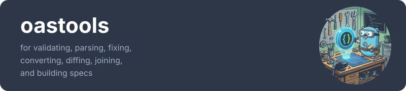

Home

A complete, self-contained OpenAPI toolkit for Go with minimal dependencies.


Parse, validate, fix, convert, diff, join, generate, and build OpenAPI specs (2.0-3.2.0) with zero runtime dependencies beyond YAML for parsing, x/tools for generating, and x/text for title casing.
Highlights
- Minimal Dependencies - Only
go.yaml.in/yaml,golang.org/x/tools, andgolang.org/x/textat runtime - Battle-Tested - 7,500+ tests† against 10 production APIs (Discord, Stripe, GitHub, MS Graph 34MB)
- Complete Toolset - 12 packages covering the full OpenAPI lifecycle
- Performance Optimized - 340+ benchmarks†; pre-parsed workflows 11-150x faster
- Type-Safe Cloning - Generated
DeepCopy()methods preserve types across OAS versions (no JSON marshal hacks) - Enterprise Ready - Structured errors with
errors.Is()/errors.As(), pluggable logging, configurable resource limits - Well Documented - Every package has godoc, runnable examples, and deep dive guides for advanced usage
- Semantic Deduplication - Automatically consolidate structurally identical schemas, reducing document size
- Optimized Memory Usage — sync.Pool reduces GC pressure up to 36% fewer allocations in marshal operations
- Deterministic Output — Order-preserving marshal for reproducible JSON/YAML output
† Test count includes table-driven subtests. Benchmark count includes parameterized sub-benchmarks. Run make count-tests and make count-benchmarks to verify.
Package Ecosystem
| Package | Description | Try |
|---|---|---|
| parser | Parse & analyze OAS files from files, URLs, or readers | |
| validator | Validate specs with structural & semantic checks | 🌐 |
| fixer | Auto-fix common validation errors | 🌐 |
| httpvalidator | Validate HTTP requests/responses against OAS at runtime | |
| converter | Convert between OAS 2.0 and 3.x | 🌐 |
| joiner | Merge multiple OAS documents with schema deduplication and operation-aware renaming | 🌐 |
| overlay | Apply OpenAPI Overlay v1.0.0 with JSONPath targeting | 🌐 |
| differ | Detect breaking changes between versions | 🌐 |
| generator | Generate Go client/server code with security support | |
| builder | Programmatically construct OAS documents with deduplication | |
| walker | Traverse OAS documents with typed handlers and flow control | |
| oaserrors | Structured error types for programmatic handling |
All packages include comprehensive documentation with runnable examples. See individual package pages on pkg.go.dev for API details.
Deep Dive Guides
For comprehensive examples and advanced usage patterns:
| Package | Deep Dive |
|---|---|
| builder | Programmatic API Construction |
| converter | Version Conversion |
| differ | Breaking Change Detection |
| fixer | Automatic Fixes |
| generator | Code Generation (Client/Server/Types) |
| httpvalidator | HTTP Request/Response Validation |
| joiner | Multi-Document Merging |
| overlay | Overlay Transformations |
| parser | Parsing & Reference Resolution |
| validator | Specification Validation |
| walker | Document Traversal |
Examples
The examples/ directory contains complete, runnable examples demonstrating the full oastools ecosystem.
| Category | Examples | Time |
|---|---|---|
| Getting Started | quickstart, validation-pipeline | 2-5 min |
| Workflows | validate-and-fix, version-conversion, multi-api-merge, breaking-change-detection, overlay-transformations, http-validation | 3-5 min each |
| Programmatic API | builder with ServerBuilder | 5 min |
| Code Generation | petstore (stdlib & chi router variants) | 10 min |
Each example is a standalone Go module with its own README, covering all 12 public packages in the ecosystem. See examples/README.md for the full feature matrix.
Installation
CLI Tool
# Homebrew (macOS and Linux)
brew tap erraggy/oastools && brew install oastools
# Go install
go install github.com/erraggy/oastools/cmd/oastools@latest
Pre-built binaries for macOS, Linux, and Windows are available on the Releases page.
Go Library
Requires Go 1.24 or higher.
Try it Online
No installation required! Use oastools directly in your browser:
🌐 oastools.robnrob.com — Validate, convert, diff, fix, join, and apply overlays without installing anything.
Quick Start
CLI
# Validate a spec (from file or URL)
oastools validate openapi.yaml
oastools validate https://example.com/api/openapi.yaml
# Convert between versions
oastools convert -t 3.0.3 swagger.yaml -o openapi.yaml
# Compare specs and detect breaking changes
oastools diff --breaking api-v1.yaml api-v2.yaml
# Fix common validation errors
oastools fix api.yaml -o fixed.yaml
# Generate Go client/server code
oastools generate --client --server -o ./generated -p api openapi.yaml
# Generate client with full OAuth2 support
oastools generate --client --oauth2-flows --readme -o ./client -p api openapi.yaml
# Generate server with router, validation middleware, and request binding
oastools generate --server --server-all -o ./server -p api openapi.yaml
# Merge multiple specs
oastools join -o merged.yaml base.yaml extensions.yaml
# Apply overlays for environment-specific customizations
oastools overlay apply -s openapi.yaml -o production-api.yaml production.yaml
# Preview overlay changes without applying
oastools overlay apply --dry-run -s openapi.yaml production.yaml
# Validate an overlay document
oastools overlay validate changes.yaml
# Pipeline support
cat swagger.yaml | oastools convert -q -t 3.0.3 - > openapi.yaml
oastools validate --format json openapi.yaml | jq '.valid'
Library
import (
"github.com/erraggy/oastools/parser"
"github.com/erraggy/oastools/validator"
"github.com/erraggy/oastools/httpvalidator"
"github.com/erraggy/oastools/differ"
"github.com/erraggy/oastools/overlay"
"github.com/erraggy/oastools/generator"
"github.com/erraggy/oastools/builder"
)
// Parse
result, _ := parser.ParseWithOptions(parser.WithFilePath("api.yaml"))
// Validate specification
vResult, _ := validator.ValidateWithOptions(validator.WithFilePath("api.yaml"))
// Validate HTTP request/response at runtime
hvResult, _ := httpvalidator.ValidateRequestWithOptions(
req,
httpvalidator.WithFilePath("api.yaml"),
httpvalidator.WithStrictMode(true),
)
// Diff
dResult, _ := differ.DiffWithOptions(
differ.WithSourceFilePath("v1.yaml"),
differ.WithTargetFilePath("v2.yaml"),
)
// Overlay with dry-run preview
oResult, _ := overlay.DryRunWithOptions(
overlay.WithSpecFilePath("api.yaml"),
overlay.WithOverlayFilePath("changes.yaml"),
)
// Generate Go client code
gResult, _ := generator.GenerateWithOptions(
generator.WithFilePath("api.yaml"),
generator.WithPackageName("api"),
generator.WithClient(true),
)
// Build a spec programmatically
spec := builder.New(parser.OASVersion300).
SetTitle("My API").
SetVersion("1.0.0").
AddServer("https://api.example.com", "Production")
doc, _ := spec.BuildOAS3()
For complete API documentation and examples, see pkg.go.dev or the Developer Guide.
Why oastools?
Minimal Dependencies
github.com/erraggy/oastools
├── go.yaml.in/yaml/v4 (YAML parsing)
└── golang.org/x/tools (Code generation - imports analysis)
Unlike many OpenAPI tools that pull in dozens of transitive dependencies, oastools is designed to be self-contained. The stretchr/testify dependency is test-only and not included in your production builds.
Battle-Tested Quality
The entire toolchain is validated against a corpus of 10 real-world production APIs:
| Domain | APIs |
|---|---|
| FinTech | Stripe, Plaid |
| Developer Tools | GitHub, DigitalOcean |
| Communications | Discord (OAS 3.1) |
| Enterprise | Microsoft Graph (34MB, 18k+ operations) |
| Location | Google Maps |
| Public | US National Weather Service |
| Reference | Petstore (OAS 2.0) |
| Productivity | Asana |
This corpus spans OAS 2.0 through 3.1, JSON and YAML formats, and document sizes from 20KB to 34MB.
Performance
Pre-parsed workflows eliminate redundant parsing when processing multiple operations:
| Method | Speedup |
|---|---|
ValidateParsed() |
31x faster |
ConvertParsed() |
~50x faster |
JoinParsed() |
150x faster |
DiffParsed() |
81x faster |
FixParsed() |
~60x faster |
ApplyParsed() |
~11x faster |
JSON marshaling is optimized for 25-32% better performance with 29-37% fewer allocations. See benchmarks.md for detailed analysis.
Type-Safe Document Cloning
All parser types include generated DeepCopy() methods for safe document mutation. Unlike JSON marshal/unmarshal approaches used by other tools, oastools provides:
- Type preservation - Polymorphic fields maintain their actual types (e.g.,
Schema.Typeasstringvs[]stringfor OAS 3.1) - Version-aware copying - Handles OAS version differences correctly (
ExclusiveMinimumas bool in 3.0 vs number in 3.1) - Extension preservation - All
x-*extension fields are deep copied - Performance - Direct struct copying without serialization overhead
// Safe mutation without affecting the original
copy := result.OAS3Document.DeepCopy()
copy.Info.Title = "Modified API"
All OAS types also provide Equals() methods for structural comparison.
Enterprise-Grade Error Handling
The oaserrors package provides structured error types that work with Go's standard errors.Is() and errors.As():
import (
"errors"
"github.com/erraggy/oastools/oaserrors"
"github.com/erraggy/oastools/parser"
)
result, err := parser.ParseWithOptions(parser.WithFilePath("api.yaml"))
if err != nil {
// Check error category with errors.Is()
if errors.Is(err, oaserrors.ErrPathTraversal) {
log.Fatal("Security: path traversal attempt blocked")
}
// Extract details with errors.As()
var refErr *oaserrors.ReferenceError
if errors.As(err, &refErr) {
log.Printf("Failed to resolve: %s (type: %s)", refErr.Ref, refErr.RefType)
}
}
Error types include ParseError, ReferenceError, ValidationError, ResourceLimitError, ConversionError, and ConfigError.
Configurable Resource Limits
Protect against resource exhaustion with configurable limits:
result, err := parser.ParseWithOptions(
parser.WithFilePath("api.yaml"),
parser.WithMaxRefDepth(50), // Max $ref nesting (default: 100)
parser.WithMaxCachedDocuments(200), // Max cached external docs (default: 100)
parser.WithMaxFileSize(20*1024*1024), // Max file size in bytes (default: 10MB)
)
HTTP Client Configuration
For advanced scenarios like custom timeouts, proxies, or authentication:
// Custom timeout for slow networks
client := &http.Client{Timeout: 120 * time.Second}
result, _ := parser.ParseWithOptions(
parser.WithFilePath("https://api.example.com/openapi.yaml"),
parser.WithHTTPClient(client),
)
// Corporate proxy
proxyURL, _ := url.Parse("http://proxy.corp:8080")
client := &http.Client{
Transport: &http.Transport{Proxy: http.ProxyURL(proxyURL)},
}
result, _ := parser.ParseWithOptions(
parser.WithFilePath("https://internal-api.corp/spec.yaml"),
parser.WithHTTPClient(client),
)
When a custom client is provided, InsecureSkipVerify is ignored—configure TLS on your client's transport instead.
Supported OpenAPI Versions
| Version | Specification |
|---|---|
| 2.0 (Swagger) | spec |
| 3.0.0 - 3.0.4 | spec |
| 3.1.0 - 3.1.2 | spec |
| 3.2.0 | spec |
Features:
- Automatic format detection and preservation (JSON/YAML)
- External reference resolution (local files; HTTP with opt-in flag)
- JSON Pointer array index support (#/paths/~1users/get/parameters/0)
- Full JSON Schema Draft 2020-12 compliance for OAS 3.1+ (including unevaluatedProperties, unevaluatedItems, content keywords)
- Path traversal protection for security
Documentation
📄 White Paper - Comprehensive technical exploration of oastools architecture and design
📚 Developer Guide - Complete library usage with examples for all 12 public packages
📖 CLI Reference - Full command documentation with all flags, options, and output formats
| Resource | Description |
|---|---|
| pkg.go.dev | API reference with runnable examples |
| Breaking Changes Guide | Understanding breaking change detection |
| Benchmarks | Detailed performance analysis |
Development
make check # Run all quality checks (tidy, fmt, lint, test)
make test # Run tests with coverage
make build # Build CLI binary
Documentation
make docs-serve # Preview docs locally at http://127.0.0.1:8000/oastools/
make docs-build # Build static site to site/
The documentation site is automatically deployed to GitHub Pages on every push to main.
See WORKFLOW.md for the complete development process.
Contributing
- Fork and create a feature branch
- Run
make checkbefore committing - Follow conventional commits (e.g.,
feat(parser): add feature) - Submit a PR with testing checklist
See WORKFLOW.md for guidelines and AGENTS.md for AI agent setup.
License
MIT
All code generated by Claude Code using claude-4-5-sonnet/opus with minor edits and full control by @erraggy